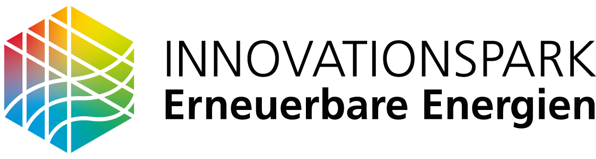

Keine aktive Kartenhervorhebung.
A44
A46
Energielandschaft
Green Energy Hub (Suchraum)
Jüchen Süd
Industriegebiet Elsbachtal
nicht aktiv

Energiesystem interaktiv zusammenstellen und Energieflüsse erkunden
Keine aktive Kartenhervorhebung.